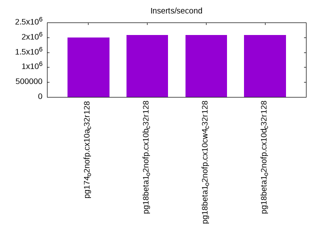
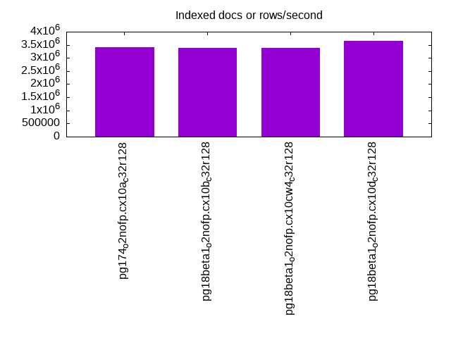
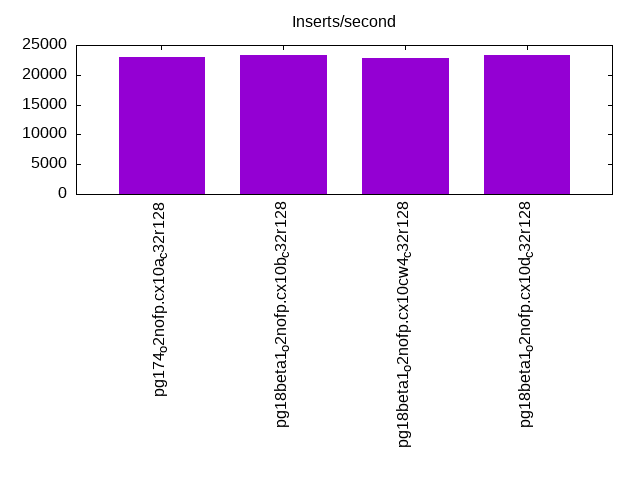
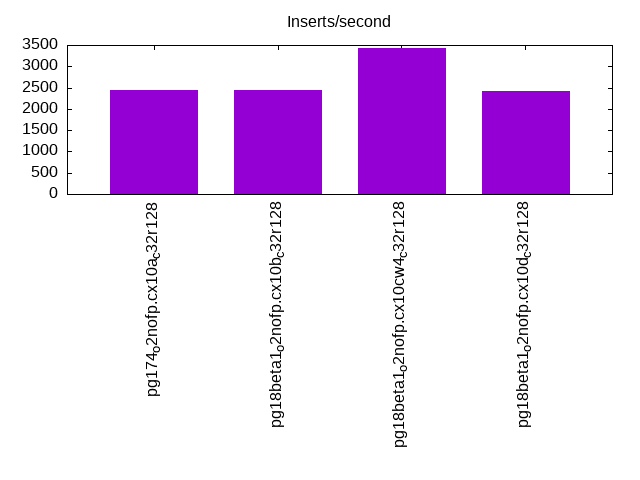
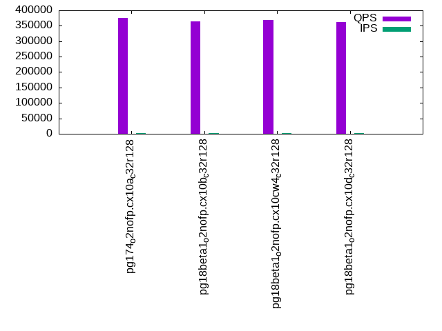
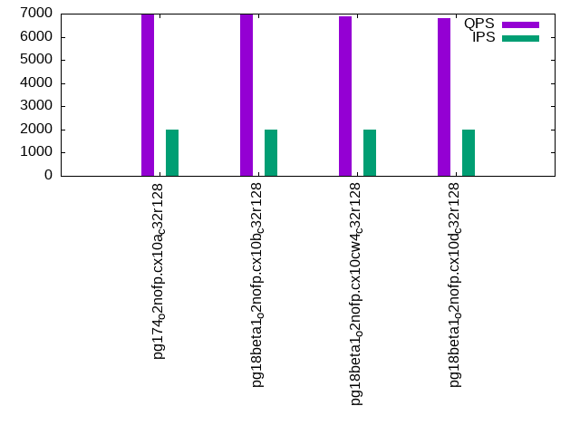
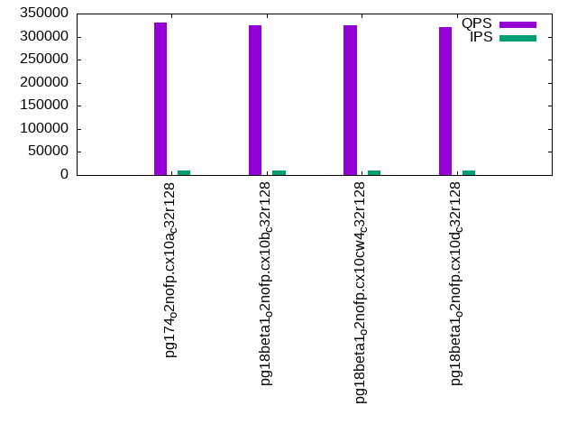
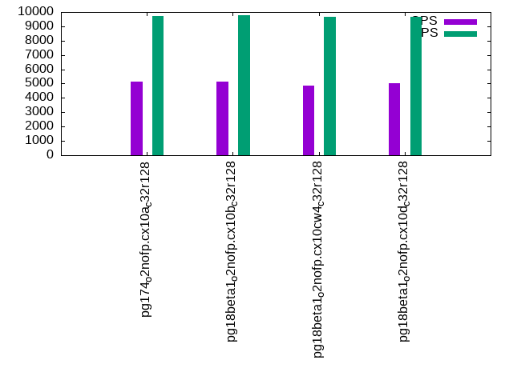
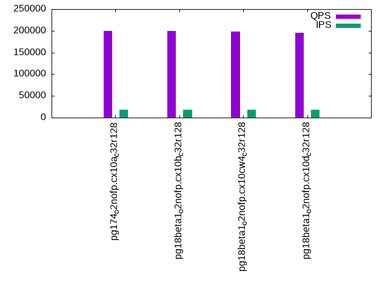
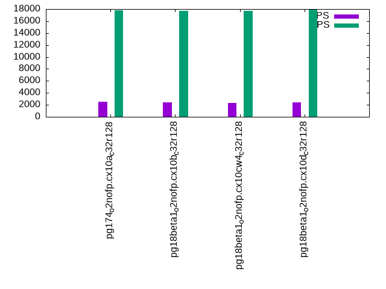

This is a report for the insert benchmark with 4000M docs and 20 client(s). It is generated by scripts (bash, awk, sed) and Tufte might not be impressed. An overview of the insert benchmark is here and a short update is here. Below, by DBMS, I mean DBMS+version.config. An example is my8020.c10b40 where my means MySQL, 8020 is version 8.0.20 and c10b40 is the name for the configuration file.
The test server has 48 AMD cores, 128G RAM and RAID 10 with 2 NVMe devices. It is described here. The benchmark was run with 20 clients and there were 1 or 3 connections per client (1 for queries or inserts without rate limits, 1+1 for rate limited inserts+deletes). It uses 20 tables with a table per client. It loads 200M rows per table without secondary indexes, creates 3 secondary indexes per table, then inserts 4m+1m rows per table with a delete per insert to avoid growing the table. It then does 6 read+write tests for 1800s each that do queries as fast as possible with 100,100,500,500,1000,1000 inserts/s and the same for deletes/s per client concurrent with the queries. The database is larger than memory. Clients and the DBMS share one server. The per-database configs are in the per-database subdirectories here.
The tested DBMS are:
The numbers are inserts/s for l.i0, l.i1 and l.i2, indexed docs (or rows) /s for l.x and queries/s for qr100, qp100 thru qr1000, qp1000" The values are the average rate over the entire test for inserts (IPS) and queries (QPS). The range of values for IPS and QPS is split into 3 parts: bottom 25%, middle 50%, top 25%. Values in the bottom 25% have a red background, values in the top 25% have a green background and values in the middle have no color. A gray background is used for values that can be ignored because the DBMS did not sustain the target insert rate. Red backgrounds are not used when the minimum value is within 80% of the max value.
| dbms | l.i0 | l.x | l.i1 | l.i2 | qr100 | qp100 | qr500 | qp500 | qr1000 | qp1000 |
|---|---|---|---|---|---|---|---|---|---|---|
| pg174_o2nofp.cx10a_c32r128 | 2000000 | 3418804 | 23028 | 2454 | 374394 | 6943 | 330556 | 5135 | 199432 | 2480 |
| pg18beta1_o2nofp.cx10b_c32r128 | 2076843 | 3384095 | 23317 | 2444 | 364237 | 6972 | 325536 | 5119 | 200372 | 2406 |
| pg18beta1_o2nofp.cx10cw4_c32r128 | 2088773 | 3372681 | 22851 | 3424 | 367823 | 6899 | 325168 | 4866 | 197728 | 2361 |
| pg18beta1_o2nofp.cx10d_c32r128 | 2077922 | 3652968 | 23399 | 2428 | 362434 | 6798 | 321441 | 5011 | 195264 | 2443 |
This table has relative throughput, throughput for the DBMS relative to the DBMS in the first line, using the absolute throughput from the previous table. Values less than 0.95 have a yellow background. Values greater than 1.05 have a blue background.
| dbms | l.i0 | l.x | l.i1 | l.i2 | qr100 | qp100 | qr500 | qp500 | qr1000 | qp1000 |
|---|---|---|---|---|---|---|---|---|---|---|
| pg174_o2nofp.cx10a_c32r128 | 1.00 | 1.00 | 1.00 | 1.00 | 1.00 | 1.00 | 1.00 | 1.00 | 1.00 | 1.00 |
| pg18beta1_o2nofp.cx10b_c32r128 | 1.04 | 0.99 | 1.01 | 1.00 | 0.97 | 1.00 | 0.98 | 1.00 | 1.00 | 0.97 |
| pg18beta1_o2nofp.cx10cw4_c32r128 | 1.04 | 0.99 | 0.99 | 1.40 | 0.98 | 0.99 | 0.98 | 0.95 | 0.99 | 0.95 |
| pg18beta1_o2nofp.cx10d_c32r128 | 1.04 | 1.07 | 1.02 | 0.99 | 0.97 | 0.98 | 0.97 | 0.98 | 0.98 | 0.99 |
This lists the average rate of inserts/s for the tests that do inserts concurrent with queries. For such tests the query rate is listed in the table above. The read+write tests are setup so that the insert rate should match the target rate every second. Cells that are not at least 95% of the target have a red background to indicate a failure to satisfy the target.
| dbms | qr100.L1 | qp100.L2 | qr500.L3 | qp500.L4 | qr1000.L5 | qp1000.L6 |
|---|---|---|---|---|---|---|
| pg174_o2nofp.cx10a_c32r128 | 1977 | 1976 | 9863 | 9719 | 17786 | 17778 |
| pg18beta1_o2nofp.cx10b_c32r128 | 1977 | 1977 | 9879 | 9793 | 18063 | 17699 |
| pg18beta1_o2nofp.cx10cw4_c32r128 | 1977 | 1977 | 9879 | 9641 | 17831 | 17690 |
| pg18beta1_o2nofp.cx10d_c32r128 | 1977 | 1977 | 9863 | 9672 | 18009 | 17910 |
| target | 2000 | 2000 | 10000 | 10000 | 20000 | 20000 |
l.i0: load without secondary indexes. Graphs for performance per 1-second interval are here.
Average throughput:
Insert response time histogram: each cell has the percentage of responses that take <= the time in the header and max is the max response time in seconds. For the max column values in the top 25% of the range have a red background and in the bottom 25% of the range have a green background. The red background is not used when the min value is within 80% of the max value.
| dbms | 256us | 1ms | 4ms | 16ms | 64ms | 256ms | 1s | 4s | 16s | gt | max |
|---|---|---|---|---|---|---|---|---|---|---|---|
| pg174_o2nofp.cx10a_c32r128 | 88.301 | 11.362 | 0.245 | 0.071 | 0.014 | 0.006 | nonzero | 1.354 | |||
| pg18beta1_o2nofp.cx10b_c32r128 | 91.700 | 7.920 | 0.283 | 0.086 | 0.005 | 0.006 | nonzero | 1.447 | |||
| pg18beta1_o2nofp.cx10cw4_c32r128 | 91.716 | 7.942 | 0.240 | 0.091 | 0.005 | 0.006 | nonzero | 1.393 | |||
| pg18beta1_o2nofp.cx10d_c32r128 | 91.639 | 7.990 | 0.273 | 0.087 | 0.006 | 0.005 | 0.912 |
Performance metrics for the DBMS listed above. Some are normalized by throughput, others are not. Legend for results is here.
ips qps rps rmbps wps wmbps rpq rkbpq wpi wkbpi csps cpups cspq cpupq dbgb1 dbgb2 rss maxop p50 p99 tag 2000000 0 1711 13.7 8354.8 799.3 0.001 0.007 0.004 0.409 367628 55.9 0.184 13 382.7 478.8 95.3 1.354 109164 29968 pg174_o2nofp.cx10a_c32r128 2076843 0 1798 14.4 8733.1 829.2 0.001 0.007 0.004 0.409 336844 57.4 0.162 13 382.7 478.8 96.3 1.447 113078 33164 pg18beta1_o2nofp.cx10b_c32r128 2088773 0 1792 14.4 8768.8 836.4 0.001 0.007 0.004 0.410 348668 57.7 0.167 13 382.7 478.8 95.1 1.393 112971 41068 pg18beta1_o2nofp.cx10cw4_c32r128 2077922 0 1744 14.0 8756.5 837.6 0.001 0.007 0.004 0.413 349296 57.5 0.168 13 382.7 478.8 96.2 0.912 112879 34762 pg18beta1_o2nofp.cx10d_c32r128
l.x: create secondary indexes.
Average throughput:
Performance metrics for the DBMS listed above. Some are normalized by throughput, others are not. Legend for results is here.
ips qps rps rmbps wps wmbps rpq rkbpq wpi wkbpi csps cpups cspq cpupq dbgb1 dbgb2 rss maxop p50 p99 tag 3418804 0 11156 1086.6 8808.2 981.7 0.003 0.325 0.003 0.294 90230 23.6 0.026 3 768.4 864.0 30.8 0.003 NA NA pg174_o2nofp.cx10a_c32r128 3384095 0 11067 1077.4 8752.4 967.2 0.003 0.326 0.003 0.293 89669 23.5 0.026 3 768.4 863.7 31.4 0.031 NA NA pg18beta1_o2nofp.cx10b_c32r128 3372681 0 11350 1072.9 8676.6 964.7 0.003 0.326 0.003 0.293 94078 24.0 0.028 3 768.4 863.7 56.3 0.089 NA NA pg18beta1_o2nofp.cx10cw4_c32r128 3652968 0 12255 1160.9 9141.5 1038.2 0.003 0.325 0.003 0.291 117144 26.0 0.032 3 768.4 863.7 30.2 0.164 NA NA pg18beta1_o2nofp.cx10d_c32r128
l.i1: continue load after secondary indexes created with 50 inserts per transaction. Graphs for performance per 1-second interval are here.
Average throughput:
Insert response time histogram: each cell has the percentage of responses that take <= the time in the header and max is the max response time in seconds. For the max column values in the top 25% of the range have a red background and in the bottom 25% of the range have a green background. The red background is not used when the min value is within 80% of the max value.
| dbms | 256us | 1ms | 4ms | 16ms | 64ms | 256ms | 1s | 4s | 16s | gt | max |
|---|---|---|---|---|---|---|---|---|---|---|---|
| pg174_o2nofp.cx10a_c32r128 | 18.717 | 65.203 | 15.887 | 0.086 | 0.107 | nonzero | 4.128 | ||||
| pg18beta1_o2nofp.cx10b_c32r128 | 16.205 | 69.102 | 14.494 | 0.089 | 0.110 | 3.620 | |||||
| pg18beta1_o2nofp.cx10cw4_c32r128 | 15.646 | 68.291 | 15.866 | 0.075 | 0.122 | nonzero | 4.752 | ||||
| pg18beta1_o2nofp.cx10d_c32r128 | 17.086 | 68.770 | 13.955 | 0.081 | 0.108 | 3.840 |
Delete response time histogram: each cell has the percentage of responses that take <= the time in the header and max is the max response time in seconds. For the max column values in the top 25% of the range have a red background and in the bottom 25% of the range have a green background. The red background is not used when the min value is within 80% of the max value.
| dbms | 256us | 1ms | 4ms | 16ms | 64ms | 256ms | 1s | 4s | 16s | gt | max |
|---|---|---|---|---|---|---|---|---|---|---|---|
| pg174_o2nofp.cx10a_c32r128 | 2.494 | 8.433 | 22.667 | 61.593 | 4.712 | 0.033 | 0.068 | 2.462 | |||
| pg18beta1_o2nofp.cx10b_c32r128 | 2.476 | 8.387 | 24.205 | 62.697 | 2.142 | 0.032 | 0.061 | 2.792 | |||
| pg18beta1_o2nofp.cx10cw4_c32r128 | 2.383 | 8.212 | 23.889 | 62.700 | 2.710 | 0.042 | 0.064 | 2.312 | |||
| pg18beta1_o2nofp.cx10d_c32r128 | 2.423 | 9.168 | 22.239 | 63.393 | 2.677 | 0.037 | 0.062 | 2.478 |
Performance metrics for the DBMS listed above. Some are normalized by throughput, others are not. Legend for results is here.
ips qps rps rmbps wps wmbps rpq rkbpq wpi wkbpi csps cpups cspq cpupq dbgb1 dbgb2 rss maxop p50 p99 tag 23028 0 29117 232.4 33725.2 751.8 1.264 10.335 1.465 33.428 80104 31.4 3.479 655 781.5 877.6 79.1 4.128 1099 0 pg174_o2nofp.cx10a_c32r128 23317 0 29436 234.3 34821.3 761.9 1.262 10.290 1.493 33.462 83004 30.5 3.560 628 781.5 912.1 85.3 3.620 1149 0 pg18beta1_o2nofp.cx10b_c32r128 22851 0 28896 230.7 33504.8 746.3 1.265 10.340 1.466 33.442 81801 31.1 3.580 653 781.5 877.6 77.6 4.752 1099 0 pg18beta1_o2nofp.cx10cw4_c32r128 23399 0 29606 235.7 34626.3 760.7 1.265 10.316 1.480 33.291 84107 31.9 3.595 654 781.5 877.6 84.6 3.840 1149 0 pg18beta1_o2nofp.cx10d_c32r128
l.i2: continue load after secondary indexes created with 5 inserts per transaction. Graphs for performance per 1-second interval are here.
Average throughput:
Insert response time histogram: each cell has the percentage of responses that take <= the time in the header and max is the max response time in seconds. For the max column values in the top 25% of the range have a red background and in the bottom 25% of the range have a green background. The red background is not used when the min value is within 80% of the max value.
| dbms | 256us | 1ms | 4ms | 16ms | 64ms | 256ms | 1s | 4s | 16s | gt | max |
|---|---|---|---|---|---|---|---|---|---|---|---|
| pg174_o2nofp.cx10a_c32r128 | 0.001 | 36.989 | 62.758 | 0.047 | 0.068 | 0.032 | 0.075 | 0.031 | 3.831 | ||
| pg18beta1_o2nofp.cx10b_c32r128 | 0.093 | 36.916 | 62.598 | 0.085 | 0.193 | 0.029 | 0.062 | 0.023 | nonzero | 6.641 | |
| pg18beta1_o2nofp.cx10cw4_c32r128 | 0.093 | 36.787 | 62.558 | 0.082 | 0.357 | 0.029 | 0.067 | 0.028 | nonzero | 6.641 | |
| pg18beta1_o2nofp.cx10d_c32r128 | 0.015 | 36.931 | 62.789 | 0.041 | 0.103 | 0.029 | 0.066 | 0.026 | nonzero | 4.244 |
Delete response time histogram: each cell has the percentage of responses that take <= the time in the header and max is the max response time in seconds. For the max column values in the top 25% of the range have a red background and in the bottom 25% of the range have a green background. The red background is not used when the min value is within 80% of the max value.
| dbms | 256us | 1ms | 4ms | 16ms | 64ms | 256ms | 1s | 4s | 16s | gt | max |
|---|---|---|---|---|---|---|---|---|---|---|---|
| pg174_o2nofp.cx10a_c32r128 | 0.145 | 0.311 | 0.001 | 0.055 | 99.486 | 0.001 | 0.001 | nonzero | 1.792 | ||
| pg18beta1_o2nofp.cx10b_c32r128 | 0.136 | 2.005 | 1.572 | 0.036 | 96.246 | 0.003 | 0.001 | nonzero | 2.747 | ||
| pg18beta1_o2nofp.cx10cw4_c32r128 | 0.189 | 3.324 | 2.338 | 0.085 | 94.058 | 0.003 | 0.002 | nonzero | 1.775 | ||
| pg18beta1_o2nofp.cx10d_c32r128 | 0.054 | 0.792 | 0.003 | 0.074 | 99.073 | 0.002 | 0.001 | nonzero | 1.438 |
Performance metrics for the DBMS listed above. Some are normalized by throughput, others are not. Legend for results is here.
ips qps rps rmbps wps wmbps rpq rkbpq wpi wkbpi csps cpups cspq cpupq dbgb1 dbgb2 rss maxop p50 p99 tag 2454 0 3063 26.8 4854.2 76.2 1.248 11.179 1.978 31.785 18857 28.4 7.685 5555 784.9 880.9 78.6 3.831 120 80 pg174_o2nofp.cx10a_c32r128 2444 0 3116 28.5 4757.5 74.3 1.275 11.945 1.947 31.121 18668 27.1 7.638 5322 784.8 880.9 75.9 6.641 120 85 pg18beta1_o2nofp.cx10b_c32r128 3424 0 4420 43.7 6727.9 108.2 1.291 13.055 1.965 32.362 26545 33.8 7.753 4738 784.7 880.8 76.6 6.641 120 75 pg18beta1_o2nofp.cx10cw4_c32r128 2428 0 3022 26.1 4724.0 74.6 1.245 11.016 1.946 31.482 18817 29.9 7.750 5911 784.9 880.9 78.8 4.244 120 60 pg18beta1_o2nofp.cx10d_c32r128
qr100.L1: range queries with 100 insert/s per client. Graphs for performance per 1-second interval are here.
Average throughput:
Query response time histogram: each cell has the percentage of responses that take <= the time in the header and max is the max response time in seconds. For max values in the top 25% of the range have a red background and in the bottom 25% of the range have a green background. The red background is not used when the min value is within 80% of the max value.
| dbms | 256us | 1ms | 4ms | 16ms | 64ms | 256ms | 1s | 4s | 16s | gt | max |
|---|---|---|---|---|---|---|---|---|---|---|---|
| pg174_o2nofp.cx10a_c32r128 | 99.993 | 0.006 | 0.001 | nonzero | nonzero | nonzero | nonzero | 0.422 | |||
| pg18beta1_o2nofp.cx10b_c32r128 | 99.993 | 0.006 | 0.001 | nonzero | nonzero | nonzero | 0.247 | ||||
| pg18beta1_o2nofp.cx10cw4_c32r128 | 99.993 | 0.006 | 0.001 | nonzero | nonzero | 0.017 | |||||
| pg18beta1_o2nofp.cx10d_c32r128 | 99.992 | 0.007 | 0.001 | nonzero | nonzero | nonzero | nonzero | 0.771 |
Insert response time histogram: each cell has the percentage of responses that take <= the time in the header and max is the max response time in seconds. For max values in the top 25% of the range have a red background and in the bottom 25% of the range have a green background. The red background is not used when the min value is within 80% of the max value.
| dbms | 256us | 1ms | 4ms | 16ms | 64ms | 256ms | 1s | 4s | 16s | gt | max |
|---|---|---|---|---|---|---|---|---|---|---|---|
| pg174_o2nofp.cx10a_c32r128 | 98.513 | 1.449 | 0.033 | 0.006 | 0.363 | ||||||
| pg18beta1_o2nofp.cx10b_c32r128 | 99.107 | 0.882 | 0.010 | 0.001 | 0.262 | ||||||
| pg18beta1_o2nofp.cx10cw4_c32r128 | 99.258 | 0.714 | 0.013 | 0.015 | 0.639 | ||||||
| pg18beta1_o2nofp.cx10d_c32r128 | 99.362 | 0.585 | 0.042 | 0.011 | 0.416 |
Delete response time histogram: each cell has the percentage of responses that take <= the time in the header and max is the max response time in seconds. For max values in the top 25% of the range have a red background and in the bottom 25% of the range have a green background. The red background is not used when the min value is within 80% of the max value.
| dbms | 256us | 1ms | 4ms | 16ms | 64ms | 256ms | 1s | 4s | 16s | gt | max |
|---|---|---|---|---|---|---|---|---|---|---|---|
| pg174_o2nofp.cx10a_c32r128 | 44.542 | 55.383 | 0.075 | 0.014 | |||||||
| pg18beta1_o2nofp.cx10b_c32r128 | 47.386 | 52.568 | 0.044 | 0.001 | 0.021 | ||||||
| pg18beta1_o2nofp.cx10cw4_c32r128 | 47.149 | 52.793 | 0.058 | 0.014 | |||||||
| pg18beta1_o2nofp.cx10d_c32r128 | 46.617 | 53.325 | 0.058 | 0.011 |
Performance metrics for the DBMS listed above. Some are normalized by throughput, others are not. Legend for results is here.
ips qps rps rmbps wps wmbps rpq rkbpq wpi wkbpi csps cpups cspq cpupq dbgb1 dbgb2 rss maxop p50 p99 tag 1977 374394 2722 21.9 1230.1 36.0 0.007 0.060 0.622 18.673 1424704 42.9 3.805 55 785.0 881.0 93.8 0.422 19165 17070 pg174_o2nofp.cx10a_c32r128 1977 364237 2672 21.5 1290.1 36.6 0.007 0.061 0.653 18.963 1385103 43.2 3.803 57 784.9 881.0 95.6 0.247 18604 16836 pg18beta1_o2nofp.cx10b_c32r128 1977 367823 2664 21.4 1261.0 36.4 0.007 0.060 0.638 18.841 1399310 43.0 3.804 56 784.9 881.0 95.0 0.017 18748 17022 pg18beta1_o2nofp.cx10cw4_c32r128 1977 362434 2667 21.4 1291.8 36.6 0.007 0.061 0.653 18.957 1378989 43.1 3.805 57 785.0 881.0 95.1 0.771 18428 16507 pg18beta1_o2nofp.cx10d_c32r128
qp100.L2: point queries with 100 insert/s per client. Graphs for performance per 1-second interval are here.
Average throughput:
Query response time histogram: each cell has the percentage of responses that take <= the time in the header and max is the max response time in seconds. For max values in the top 25% of the range have a red background and in the bottom 25% of the range have a green background. The red background is not used when the min value is within 80% of the max value.
| dbms | 256us | 1ms | 4ms | 16ms | 64ms | 256ms | 1s | 4s | 16s | gt | max |
|---|---|---|---|---|---|---|---|---|---|---|---|
| pg174_o2nofp.cx10a_c32r128 | nonzero | 2.631 | 94.342 | 0.304 | 2.594 | 0.061 | 0.050 | 0.017 | 0.001 | 5.745 | |
| pg18beta1_o2nofp.cx10b_c32r128 | nonzero | 2.458 | 94.503 | 0.322 | 2.594 | 0.062 | 0.045 | 0.016 | 0.001 | 5.202 | |
| pg18beta1_o2nofp.cx10cw4_c32r128 | nonzero | 2.411 | 94.404 | 0.356 | 2.705 | 0.064 | 0.046 | 0.014 | 0.002 | 5.486 | |
| pg18beta1_o2nofp.cx10d_c32r128 | nonzero | 2.464 | 94.508 | 0.306 | 2.587 | 0.064 | 0.053 | 0.016 | 0.002 | 5.065 |
Insert response time histogram: each cell has the percentage of responses that take <= the time in the header and max is the max response time in seconds. For max values in the top 25% of the range have a red background and in the bottom 25% of the range have a green background. The red background is not used when the min value is within 80% of the max value.
| dbms | 256us | 1ms | 4ms | 16ms | 64ms | 256ms | 1s | 4s | 16s | gt | max |
|---|---|---|---|---|---|---|---|---|---|---|---|
| pg174_o2nofp.cx10a_c32r128 | 62.411 | 34.217 | 1.031 | 1.214 | 1.096 | 0.032 | 5.028 | ||||
| pg18beta1_o2nofp.cx10b_c32r128 | 62.325 | 34.196 | 1.024 | 1.085 | 1.314 | 0.057 | 4.711 | ||||
| pg18beta1_o2nofp.cx10cw4_c32r128 | 61.725 | 34.847 | 1.335 | 0.881 | 1.140 | 0.072 | 4.777 | ||||
| pg18beta1_o2nofp.cx10d_c32r128 | 63.436 | 32.769 | 1.247 | 1.426 | 1.104 | 0.017 | 4.610 |
Delete response time histogram: each cell has the percentage of responses that take <= the time in the header and max is the max response time in seconds. For max values in the top 25% of the range have a red background and in the bottom 25% of the range have a green background. The red background is not used when the min value is within 80% of the max value.
| dbms | 256us | 1ms | 4ms | 16ms | 64ms | 256ms | 1s | 4s | 16s | gt | max |
|---|---|---|---|---|---|---|---|---|---|---|---|
| pg174_o2nofp.cx10a_c32r128 | 94.215 | 1.974 | 3.690 | 0.010 | 0.093 | 0.018 | 3.137 | ||||
| pg18beta1_o2nofp.cx10b_c32r128 | 95.812 | 0.465 | 3.594 | 0.057 | 0.040 | 0.031 | 3.169 | ||||
| pg18beta1_o2nofp.cx10cw4_c32r128 | 95.153 | 0.851 | 3.888 | 0.011 | 0.056 | 0.042 | 3.924 | ||||
| pg18beta1_o2nofp.cx10d_c32r128 | 94.537 | 1.525 | 3.807 | 0.050 | 0.044 | 0.036 | 3.930 |
Performance metrics for the DBMS listed above. Some are normalized by throughput, others are not. Legend for results is here.
ips qps rps rmbps wps wmbps rpq rkbpq wpi wkbpi csps cpups cspq cpupq dbgb1 dbgb2 rss maxop p50 p99 tag 1976 6943 98326 771.8 6650.7 76.6 14.162 113.840 3.366 39.699 219131 19.2 31.563 1327 785.1 881.1 90.2 5.745 400 0 pg174_o2nofp.cx10a_c32r128 1977 6972 98657 774.4 6632.4 76.3 14.151 113.748 3.355 39.540 220020 19.3 31.559 1329 785.0 881.1 91.2 5.202 400 0 pg18beta1_o2nofp.cx10b_c32r128 1977 6899 97707 766.7 6596.5 76.2 14.163 113.799 3.337 39.487 218147 19.7 31.621 1371 785.1 881.2 90.7 5.486 400 0 pg18beta1_o2nofp.cx10cw4_c32r128 1977 6798 96345 756.3 6644.8 76.4 14.174 113.935 3.361 39.561 214764 19.1 31.595 1349 785.1 881.1 90.6 5.065 400 0 pg18beta1_o2nofp.cx10d_c32r128
qr500.L3: range queries with 500 insert/s per client. Graphs for performance per 1-second interval are here.
Average throughput:
Query response time histogram: each cell has the percentage of responses that take <= the time in the header and max is the max response time in seconds. For max values in the top 25% of the range have a red background and in the bottom 25% of the range have a green background. The red background is not used when the min value is within 80% of the max value.
| dbms | 256us | 1ms | 4ms | 16ms | 64ms | 256ms | 1s | 4s | 16s | gt | max |
|---|---|---|---|---|---|---|---|---|---|---|---|
| pg174_o2nofp.cx10a_c32r128 | 99.963 | 0.028 | 0.006 | 0.001 | 0.001 | nonzero | nonzero | nonzero | nonzero | 4.016 | |
| pg18beta1_o2nofp.cx10b_c32r128 | 99.967 | 0.026 | 0.006 | 0.001 | 0.001 | nonzero | nonzero | nonzero | 1.549 | ||
| pg18beta1_o2nofp.cx10cw4_c32r128 | 99.966 | 0.026 | 0.006 | 0.001 | 0.001 | nonzero | nonzero | nonzero | 1.908 | ||
| pg18beta1_o2nofp.cx10d_c32r128 | 99.964 | 0.027 | 0.006 | 0.001 | 0.001 | nonzero | nonzero | nonzero | 1.509 |
Insert response time histogram: each cell has the percentage of responses that take <= the time in the header and max is the max response time in seconds. For max values in the top 25% of the range have a red background and in the bottom 25% of the range have a green background. The red background is not used when the min value is within 80% of the max value.
| dbms | 256us | 1ms | 4ms | 16ms | 64ms | 256ms | 1s | 4s | 16s | gt | max |
|---|---|---|---|---|---|---|---|---|---|---|---|
| pg174_o2nofp.cx10a_c32r128 | 83.832 | 15.364 | 0.415 | 0.314 | 0.071 | 0.003 | 4.311 | ||||
| pg18beta1_o2nofp.cx10b_c32r128 | 86.453 | 12.668 | 0.396 | 0.426 | 0.058 | 2.602 | |||||
| pg18beta1_o2nofp.cx10cw4_c32r128 | 85.461 | 13.723 | 0.410 | 0.351 | 0.056 | 2.413 | |||||
| pg18beta1_o2nofp.cx10d_c32r128 | 85.776 | 13.481 | 0.363 | 0.316 | 0.063 | 0.003 | 4.791 |
Delete response time histogram: each cell has the percentage of responses that take <= the time in the header and max is the max response time in seconds. For max values in the top 25% of the range have a red background and in the bottom 25% of the range have a green background. The red background is not used when the min value is within 80% of the max value.
| dbms | 256us | 1ms | 4ms | 16ms | 64ms | 256ms | 1s | 4s | 16s | gt | max |
|---|---|---|---|---|---|---|---|---|---|---|---|
| pg174_o2nofp.cx10a_c32r128 | 36.081 | 62.212 | 1.685 | 0.009 | 0.009 | 0.002 | 0.001 | 4.224 | |||
| pg18beta1_o2nofp.cx10b_c32r128 | 41.577 | 57.215 | 1.184 | 0.007 | 0.017 | 0.001 | 1.687 | ||||
| pg18beta1_o2nofp.cx10cw4_c32r128 | 40.642 | 57.980 | 1.364 | 0.007 | 0.005 | 0.001 | 1.324 | ||||
| pg18beta1_o2nofp.cx10d_c32r128 | 40.708 | 57.928 | 1.341 | 0.009 | 0.012 | 0.002 | nonzero | 4.253 |
Performance metrics for the DBMS listed above. Some are normalized by throughput, others are not. Legend for results is here.
ips qps rps rmbps wps wmbps rpq rkbpq wpi wkbpi csps cpups cspq cpupq dbgb1 dbgb2 rss maxop p50 p99 tag 9863 330556 13800 111.3 14471.4 242.7 0.042 0.345 1.467 25.198 1240444 49.2 3.753 71 785.6 881.6 87.6 4.016 16798 14172 pg174_o2nofp.cx10a_c32r128 9879 325536 13838 111.6 14510.6 243.2 0.043 0.351 1.469 25.213 1230667 49.1 3.780 72 785.6 881.6 86.9 1.549 16638 14065 pg18beta1_o2nofp.cx10b_c32r128 9879 325168 13818 111.1 14520.7 243.6 0.042 0.350 1.470 25.249 1225683 49.3 3.769 73 786.0 882.1 85.7 1.908 16606 14166 pg18beta1_o2nofp.cx10cw4_c32r128 9863 321441 13798 111.3 14458.1 242.5 0.043 0.354 1.466 25.174 1211118 49.0 3.768 73 785.6 881.7 85.9 1.509 16430 13889 pg18beta1_o2nofp.cx10d_c32r128
qp500.L4: point queries with 500 insert/s per client. Graphs for performance per 1-second interval are here.
Average throughput:
Query response time histogram: each cell has the percentage of responses that take <= the time in the header and max is the max response time in seconds. For max values in the top 25% of the range have a red background and in the bottom 25% of the range have a green background. The red background is not used when the min value is within 80% of the max value.
| dbms | 256us | 1ms | 4ms | 16ms | 64ms | 256ms | 1s | 4s | 16s | gt | max |
|---|---|---|---|---|---|---|---|---|---|---|---|
| pg174_o2nofp.cx10a_c32r128 | 0.212 | 93.672 | 1.354 | 4.706 | 0.030 | 0.018 | 0.006 | 0.001 | 6.969 | ||
| pg18beta1_o2nofp.cx10b_c32r128 | 0.186 | 93.819 | 1.131 | 4.810 | 0.029 | 0.018 | 0.006 | 0.001 | 5.981 | ||
| pg18beta1_o2nofp.cx10cw4_c32r128 | 0.183 | 93.257 | 1.489 | 5.002 | 0.039 | 0.019 | 0.008 | 0.002 | 6.503 | ||
| pg18beta1_o2nofp.cx10d_c32r128 | 0.190 | 93.665 | 1.298 | 4.793 | 0.031 | 0.014 | 0.008 | 0.001 | 6.688 |
Insert response time histogram: each cell has the percentage of responses that take <= the time in the header and max is the max response time in seconds. For max values in the top 25% of the range have a red background and in the bottom 25% of the range have a green background. The red background is not used when the min value is within 80% of the max value.
| dbms | 256us | 1ms | 4ms | 16ms | 64ms | 256ms | 1s | 4s | 16s | gt | max |
|---|---|---|---|---|---|---|---|---|---|---|---|
| pg174_o2nofp.cx10a_c32r128 | 37.035 | 61.715 | 0.827 | 0.278 | 0.118 | 0.027 | 6.695 | ||||
| pg18beta1_o2nofp.cx10b_c32r128 | 43.968 | 54.959 | 0.658 | 0.274 | 0.125 | 0.016 | 6.034 | ||||
| pg18beta1_o2nofp.cx10cw4_c32r128 | 35.013 | 63.234 | 1.198 | 0.329 | 0.184 | 0.042 | 7.136 | ||||
| pg18beta1_o2nofp.cx10d_c32r128 | 39.792 | 58.796 | 1.001 | 0.218 | 0.176 | 0.016 | 6.742 |
Delete response time histogram: each cell has the percentage of responses that take <= the time in the header and max is the max response time in seconds. For max values in the top 25% of the range have a red background and in the bottom 25% of the range have a green background. The red background is not used when the min value is within 80% of the max value.
| dbms | 256us | 1ms | 4ms | 16ms | 64ms | 256ms | 1s | 4s | 16s | gt | max |
|---|---|---|---|---|---|---|---|---|---|---|---|
| pg174_o2nofp.cx10a_c32r128 | 72.939 | 26.839 | 0.099 | 0.100 | 0.023 | 0.001 | 5.504 | ||||
| pg18beta1_o2nofp.cx10b_c32r128 | 66.959 | 32.798 | 0.102 | 0.101 | 0.041 | 3.867 | |||||
| pg18beta1_o2nofp.cx10cw4_c32r128 | 66.701 | 32.950 | 0.157 | 0.146 | 0.039 | 0.007 | 5.622 | ||||
| pg18beta1_o2nofp.cx10d_c32r128 | 66.916 | 32.862 | 0.108 | 0.076 | 0.038 | 3.712 |
Performance metrics for the DBMS listed above. Some are normalized by throughput, others are not. Legend for results is here.
ips qps rps rmbps wps wmbps rpq rkbpq wpi wkbpi csps cpups cspq cpupq dbgb1 dbgb2 rss maxop p50 p99 tag 9719 5135 92758 728.6 21752.7 294.5 18.064 145.298 2.238 31.033 211938 37.1 41.273 3468 786.0 882.1 30.1 6.969 272 0 pg174_o2nofp.cx10a_c32r128 9793 5119 92517 726.8 21970.3 296.5 18.073 145.386 2.243 31.003 211964 37.7 41.407 3535 786.1 882.1 33.4 5.981 272 0 pg18beta1_o2nofp.cx10b_c32r128 9641 4866 88836 697.3 21602.7 292.1 18.258 146.758 2.241 31.023 203013 37.4 41.725 3690 787.2 883.3 40.3 6.503 272 0 pg18beta1_o2nofp.cx10cw4_c32r128 9672 5011 90896 713.9 21652.7 293.1 18.138 145.881 2.239 31.029 206943 37.2 41.294 3563 786.2 882.2 33.6 6.688 272 0 pg18beta1_o2nofp.cx10d_c32r128
qr1000.L5: range queries with 1000 insert/s per client. Graphs for performance per 1-second interval are here.
Average throughput:
Query response time histogram: each cell has the percentage of responses that take <= the time in the header and max is the max response time in seconds. For max values in the top 25% of the range have a red background and in the bottom 25% of the range have a green background. The red background is not used when the min value is within 80% of the max value.
| dbms | 256us | 1ms | 4ms | 16ms | 64ms | 256ms | 1s | 4s | 16s | gt | max |
|---|---|---|---|---|---|---|---|---|---|---|---|
| pg174_o2nofp.cx10a_c32r128 | 99.534 | 0.345 | 0.042 | 0.050 | 0.028 | 0.001 | nonzero | nonzero | nonzero | 6.237 | |
| pg18beta1_o2nofp.cx10b_c32r128 | 99.539 | 0.355 | 0.041 | 0.042 | 0.023 | nonzero | nonzero | nonzero | 2.454 | ||
| pg18beta1_o2nofp.cx10cw4_c32r128 | 99.519 | 0.366 | 0.043 | 0.046 | 0.025 | nonzero | nonzero | nonzero | 3.378 | ||
| pg18beta1_o2nofp.cx10d_c32r128 | 99.506 | 0.380 | 0.043 | 0.045 | 0.025 | 0.001 | nonzero | nonzero | 1.991 |
Insert response time histogram: each cell has the percentage of responses that take <= the time in the header and max is the max response time in seconds. For max values in the top 25% of the range have a red background and in the bottom 25% of the range have a green background. The red background is not used when the min value is within 80% of the max value.
| dbms | 256us | 1ms | 4ms | 16ms | 64ms | 256ms | 1s | 4s | 16s | gt | max |
|---|---|---|---|---|---|---|---|---|---|---|---|
| pg174_o2nofp.cx10a_c32r128 | 33.214 | 46.519 | 20.067 | 0.083 | 0.099 | 0.017 | 6.785 | ||||
| pg18beta1_o2nofp.cx10b_c32r128 | 36.698 | 43.745 | 19.339 | 0.115 | 0.102 | nonzero | 5.029 | ||||
| pg18beta1_o2nofp.cx10cw4_c32r128 | 31.791 | 46.720 | 21.260 | 0.100 | 0.122 | 0.007 | 7.900 | ||||
| pg18beta1_o2nofp.cx10d_c32r128 | 32.964 | 46.438 | 20.381 | 0.112 | 0.099 | 0.006 | 7.172 |
Delete response time histogram: each cell has the percentage of responses that take <= the time in the header and max is the max response time in seconds. For max values in the top 25% of the range have a red background and in the bottom 25% of the range have a green background. The red background is not used when the min value is within 80% of the max value.
| dbms | 256us | 1ms | 4ms | 16ms | 64ms | 256ms | 1s | 4s | 16s | gt | max |
|---|---|---|---|---|---|---|---|---|---|---|---|
| pg174_o2nofp.cx10a_c32r128 | 32.391 | 61.715 | 5.821 | 0.026 | 0.046 | nonzero | 6.605 | ||||
| pg18beta1_o2nofp.cx10b_c32r128 | 34.065 | 61.667 | 4.173 | 0.048 | 0.047 | 2.508 | |||||
| pg18beta1_o2nofp.cx10cw4_c32r128 | 32.089 | 63.265 | 4.548 | 0.042 | 0.056 | 3.395 | |||||
| pg18beta1_o2nofp.cx10d_c32r128 | 32.159 | 63.256 | 4.486 | 0.045 | 0.054 | 1.987 |
Performance metrics for the DBMS listed above. Some are normalized by throughput, others are not. Legend for results is here.
ips qps rps rmbps wps wmbps rpq rkbpq wpi wkbpi csps cpups cspq cpupq dbgb1 dbgb2 rss maxop p50 p99 tag 17786 199432 23653 190.4 25855.7 545.7 0.119 0.978 1.454 31.420 652531 63.2 3.272 152 788.9 928.9 77.6 6.237 10340 416 pg174_o2nofp.cx10a_c32r128 18063 200372 24061 193.8 26413.8 557.7 0.120 0.990 1.462 31.619 653648 65.0 3.262 156 788.7 925.9 78.7 2.454 10309 1918 pg18beta1_o2nofp.cx10b_c32r128 17831 197728 23698 190.5 25832.8 548.2 0.120 0.987 1.449 31.483 642676 64.4 3.250 156 790.3 928.3 77.0 3.378 10268 1023 pg18beta1_o2nofp.cx10cw4_c32r128 18009 195264 23944 192.8 26400.6 554.0 0.123 1.011 1.466 31.500 635162 64.3 3.253 158 789.0 929.4 77.1 1.991 10117 1295 pg18beta1_o2nofp.cx10d_c32r128
qp1000.L6: point queries with 1000 insert/s per client. Graphs for performance per 1-second interval are here.
Average throughput:
Query response time histogram: each cell has the percentage of responses that take <= the time in the header and max is the max response time in seconds. For max values in the top 25% of the range have a red background and in the bottom 25% of the range have a green background. The red background is not used when the min value is within 80% of the max value.
| dbms | 256us | 1ms | 4ms | 16ms | 64ms | 256ms | 1s | 4s | 16s | gt | max |
|---|---|---|---|---|---|---|---|---|---|---|---|
| pg174_o2nofp.cx10a_c32r128 | 0.001 | 69.644 | 20.855 | 9.110 | 0.305 | 0.056 | 0.024 | 0.005 | 10.150 | ||
| pg18beta1_o2nofp.cx10b_c32r128 | 0.001 | 67.856 | 22.399 | 9.329 | 0.331 | 0.051 | 0.028 | 0.005 | 9.886 | ||
| pg18beta1_o2nofp.cx10cw4_c32r128 | 0.001 | 67.144 | 22.383 | 10.035 | 0.354 | 0.055 | 0.024 | 0.004 | 10.822 | ||
| pg18beta1_o2nofp.cx10d_c32r128 | 0.001 | 68.432 | 21.835 | 9.309 | 0.344 | 0.051 | 0.024 | 0.004 | 10.573 |
Insert response time histogram: each cell has the percentage of responses that take <= the time in the header and max is the max response time in seconds. For max values in the top 25% of the range have a red background and in the bottom 25% of the range have a green background. The red background is not used when the min value is within 80% of the max value.
| dbms | 256us | 1ms | 4ms | 16ms | 64ms | 256ms | 1s | 4s | 16s | gt | max |
|---|---|---|---|---|---|---|---|---|---|---|---|
| pg174_o2nofp.cx10a_c32r128 | 10.286 | 72.209 | 16.899 | 0.386 | 0.185 | 0.035 | 11.435 | ||||
| pg18beta1_o2nofp.cx10b_c32r128 | 9.455 | 71.945 | 18.011 | 0.352 | 0.203 | 0.034 | 9.952 | ||||
| pg18beta1_o2nofp.cx10cw4_c32r128 | 8.939 | 70.124 | 20.357 | 0.374 | 0.177 | 0.029 | 10.841 | ||||
| pg18beta1_o2nofp.cx10d_c32r128 | 9.945 | 71.688 | 17.812 | 0.351 | 0.175 | 0.030 | 10.549 |
Delete response time histogram: each cell has the percentage of responses that take <= the time in the header and max is the max response time in seconds. For max values in the top 25% of the range have a red background and in the bottom 25% of the range have a green background. The red background is not used when the min value is within 80% of the max value.
| dbms | 256us | 1ms | 4ms | 16ms | 64ms | 256ms | 1s | 4s | 16s | gt | max |
|---|---|---|---|---|---|---|---|---|---|---|---|
| pg174_o2nofp.cx10a_c32r128 | 0.041 | 96.208 | 3.444 | 0.209 | 0.096 | 0.002 | 6.005 | ||||
| pg18beta1_o2nofp.cx10b_c32r128 | 0.037 | 96.319 | 3.372 | 0.184 | 0.088 | 3.058 | |||||
| pg18beta1_o2nofp.cx10cw4_c32r128 | 0.030 | 96.046 | 3.629 | 0.205 | 0.089 | nonzero | 5.224 | ||||
| pg18beta1_o2nofp.cx10d_c32r128 | 0.021 | 96.181 | 3.514 | 0.190 | 0.094 | 0.001 | 7.745 |
Performance metrics for the DBMS listed above. Some are normalized by throughput, others are not. Legend for results is here.
ips qps rps rmbps wps wmbps rpq rkbpq wpi wkbpi csps cpups cspq cpupq dbgb1 dbgb2 rss maxop p50 p99 tag 17778 2480 69599 546.7 35357.2 523.3 28.062 225.735 1.989 30.141 163001 60.8 65.721 11767 793.2 889.2 60.1 10.150 128 0 pg174_o2nofp.cx10a_c32r128 17699 2406 68246 536.1 35405.3 525.9 28.363 228.157 2.000 30.425 160283 61.0 66.612 12169 793.0 889.1 53.0 9.886 128 0 pg18beta1_o2nofp.cx10b_c32r128 17690 2361 67556 530.7 35024.6 523.4 28.616 230.199 1.980 30.296 157302 62.5 66.631 12708 794.6 890.7 49.3 10.822 128 0 pg18beta1_o2nofp.cx10cw4_c32r128 17910 2443 69231 543.9 35466.6 524.9 28.339 227.968 1.980 30.012 161659 62.0 66.172 12182 793.3 889.3 52.6 10.573 128 0 pg18beta1_o2nofp.cx10d_c32r128
l.i0: load without secondary indexes
Performance metrics for all DBMS, not just the ones listed above. Some are normalized by throughput, others are not. Legend for results is here.
ips qps rps rmbps wps wmbps rpq rkbpq wpi wkbpi csps cpups cspq cpupq dbgb1 dbgb2 rss maxop p50 p99 tag 2000000 0 1711 13.7 8354.8 799.3 0.001 0.007 0.004 0.409 367628 55.9 0.184 13 382.7 478.8 95.3 1.354 109164 29968 pg174_o2nofp.cx10a_c32r128 2076843 0 1798 14.4 8733.1 829.2 0.001 0.007 0.004 0.409 336844 57.4 0.162 13 382.7 478.8 96.3 1.447 113078 33164 pg18beta1_o2nofp.cx10b_c32r128 2088773 0 1792 14.4 8768.8 836.4 0.001 0.007 0.004 0.410 348668 57.7 0.167 13 382.7 478.8 95.1 1.393 112971 41068 pg18beta1_o2nofp.cx10cw4_c32r128 2077922 0 1744 14.0 8756.5 837.6 0.001 0.007 0.004 0.413 349296 57.5 0.168 13 382.7 478.8 96.2 0.912 112879 34762 pg18beta1_o2nofp.cx10d_c32r128
l.x: create secondary indexes
Performance metrics for all DBMS, not just the ones listed above. Some are normalized by throughput, others are not. Legend for results is here.
ips qps rps rmbps wps wmbps rpq rkbpq wpi wkbpi csps cpups cspq cpupq dbgb1 dbgb2 rss maxop p50 p99 tag 3418804 0 11156 1086.6 8808.2 981.7 0.003 0.325 0.003 0.294 90230 23.6 0.026 3 768.4 864.0 30.8 0.003 NA NA pg174_o2nofp.cx10a_c32r128 3384095 0 11067 1077.4 8752.4 967.2 0.003 0.326 0.003 0.293 89669 23.5 0.026 3 768.4 863.7 31.4 0.031 NA NA pg18beta1_o2nofp.cx10b_c32r128 3372681 0 11350 1072.9 8676.6 964.7 0.003 0.326 0.003 0.293 94078 24.0 0.028 3 768.4 863.7 56.3 0.089 NA NA pg18beta1_o2nofp.cx10cw4_c32r128 3652968 0 12255 1160.9 9141.5 1038.2 0.003 0.325 0.003 0.291 117144 26.0 0.032 3 768.4 863.7 30.2 0.164 NA NA pg18beta1_o2nofp.cx10d_c32r128
l.i1: continue load after secondary indexes created with 50 inserts per transaction
Performance metrics for all DBMS, not just the ones listed above. Some are normalized by throughput, others are not. Legend for results is here.
ips qps rps rmbps wps wmbps rpq rkbpq wpi wkbpi csps cpups cspq cpupq dbgb1 dbgb2 rss maxop p50 p99 tag 23028 0 29117 232.4 33725.2 751.8 1.264 10.335 1.465 33.428 80104 31.4 3.479 655 781.5 877.6 79.1 4.128 1099 0 pg174_o2nofp.cx10a_c32r128 23317 0 29436 234.3 34821.3 761.9 1.262 10.290 1.493 33.462 83004 30.5 3.560 628 781.5 912.1 85.3 3.620 1149 0 pg18beta1_o2nofp.cx10b_c32r128 22851 0 28896 230.7 33504.8 746.3 1.265 10.340 1.466 33.442 81801 31.1 3.580 653 781.5 877.6 77.6 4.752 1099 0 pg18beta1_o2nofp.cx10cw4_c32r128 23399 0 29606 235.7 34626.3 760.7 1.265 10.316 1.480 33.291 84107 31.9 3.595 654 781.5 877.6 84.6 3.840 1149 0 pg18beta1_o2nofp.cx10d_c32r128
l.i2: continue load after secondary indexes created with 5 inserts per transaction
Performance metrics for all DBMS, not just the ones listed above. Some are normalized by throughput, others are not. Legend for results is here.
ips qps rps rmbps wps wmbps rpq rkbpq wpi wkbpi csps cpups cspq cpupq dbgb1 dbgb2 rss maxop p50 p99 tag 2454 0 3063 26.8 4854.2 76.2 1.248 11.179 1.978 31.785 18857 28.4 7.685 5555 784.9 880.9 78.6 3.831 120 80 pg174_o2nofp.cx10a_c32r128 2444 0 3116 28.5 4757.5 74.3 1.275 11.945 1.947 31.121 18668 27.1 7.638 5322 784.8 880.9 75.9 6.641 120 85 pg18beta1_o2nofp.cx10b_c32r128 3424 0 4420 43.7 6727.9 108.2 1.291 13.055 1.965 32.362 26545 33.8 7.753 4738 784.7 880.8 76.6 6.641 120 75 pg18beta1_o2nofp.cx10cw4_c32r128 2428 0 3022 26.1 4724.0 74.6 1.245 11.016 1.946 31.482 18817 29.9 7.750 5911 784.9 880.9 78.8 4.244 120 60 pg18beta1_o2nofp.cx10d_c32r128
qr100.L1: range queries with 100 insert/s per client
Performance metrics for all DBMS, not just the ones listed above. Some are normalized by throughput, others are not. Legend for results is here.
ips qps rps rmbps wps wmbps rpq rkbpq wpi wkbpi csps cpups cspq cpupq dbgb1 dbgb2 rss maxop p50 p99 tag 1977 374394 2722 21.9 1230.1 36.0 0.007 0.060 0.622 18.673 1424704 42.9 3.805 55 785.0 881.0 93.8 0.422 19165 17070 pg174_o2nofp.cx10a_c32r128 1977 364237 2672 21.5 1290.1 36.6 0.007 0.061 0.653 18.963 1385103 43.2 3.803 57 784.9 881.0 95.6 0.247 18604 16836 pg18beta1_o2nofp.cx10b_c32r128 1977 367823 2664 21.4 1261.0 36.4 0.007 0.060 0.638 18.841 1399310 43.0 3.804 56 784.9 881.0 95.0 0.017 18748 17022 pg18beta1_o2nofp.cx10cw4_c32r128 1977 362434 2667 21.4 1291.8 36.6 0.007 0.061 0.653 18.957 1378989 43.1 3.805 57 785.0 881.0 95.1 0.771 18428 16507 pg18beta1_o2nofp.cx10d_c32r128
qp100.L2: point queries with 100 insert/s per client
Performance metrics for all DBMS, not just the ones listed above. Some are normalized by throughput, others are not. Legend for results is here.
ips qps rps rmbps wps wmbps rpq rkbpq wpi wkbpi csps cpups cspq cpupq dbgb1 dbgb2 rss maxop p50 p99 tag 1976 6943 98326 771.8 6650.7 76.6 14.162 113.840 3.366 39.699 219131 19.2 31.563 1327 785.1 881.1 90.2 5.745 400 0 pg174_o2nofp.cx10a_c32r128 1977 6972 98657 774.4 6632.4 76.3 14.151 113.748 3.355 39.540 220020 19.3 31.559 1329 785.0 881.1 91.2 5.202 400 0 pg18beta1_o2nofp.cx10b_c32r128 1977 6899 97707 766.7 6596.5 76.2 14.163 113.799 3.337 39.487 218147 19.7 31.621 1371 785.1 881.2 90.7 5.486 400 0 pg18beta1_o2nofp.cx10cw4_c32r128 1977 6798 96345 756.3 6644.8 76.4 14.174 113.935 3.361 39.561 214764 19.1 31.595 1349 785.1 881.1 90.6 5.065 400 0 pg18beta1_o2nofp.cx10d_c32r128
qr500.L3: range queries with 500 insert/s per client
Performance metrics for all DBMS, not just the ones listed above. Some are normalized by throughput, others are not. Legend for results is here.
ips qps rps rmbps wps wmbps rpq rkbpq wpi wkbpi csps cpups cspq cpupq dbgb1 dbgb2 rss maxop p50 p99 tag 9863 330556 13800 111.3 14471.4 242.7 0.042 0.345 1.467 25.198 1240444 49.2 3.753 71 785.6 881.6 87.6 4.016 16798 14172 pg174_o2nofp.cx10a_c32r128 9879 325536 13838 111.6 14510.6 243.2 0.043 0.351 1.469 25.213 1230667 49.1 3.780 72 785.6 881.6 86.9 1.549 16638 14065 pg18beta1_o2nofp.cx10b_c32r128 9879 325168 13818 111.1 14520.7 243.6 0.042 0.350 1.470 25.249 1225683 49.3 3.769 73 786.0 882.1 85.7 1.908 16606 14166 pg18beta1_o2nofp.cx10cw4_c32r128 9863 321441 13798 111.3 14458.1 242.5 0.043 0.354 1.466 25.174 1211118 49.0 3.768 73 785.6 881.7 85.9 1.509 16430 13889 pg18beta1_o2nofp.cx10d_c32r128
qp500.L4: point queries with 500 insert/s per client
Performance metrics for all DBMS, not just the ones listed above. Some are normalized by throughput, others are not. Legend for results is here.
ips qps rps rmbps wps wmbps rpq rkbpq wpi wkbpi csps cpups cspq cpupq dbgb1 dbgb2 rss maxop p50 p99 tag 9719 5135 92758 728.6 21752.7 294.5 18.064 145.298 2.238 31.033 211938 37.1 41.273 3468 786.0 882.1 30.1 6.969 272 0 pg174_o2nofp.cx10a_c32r128 9793 5119 92517 726.8 21970.3 296.5 18.073 145.386 2.243 31.003 211964 37.7 41.407 3535 786.1 882.1 33.4 5.981 272 0 pg18beta1_o2nofp.cx10b_c32r128 9641 4866 88836 697.3 21602.7 292.1 18.258 146.758 2.241 31.023 203013 37.4 41.725 3690 787.2 883.3 40.3 6.503 272 0 pg18beta1_o2nofp.cx10cw4_c32r128 9672 5011 90896 713.9 21652.7 293.1 18.138 145.881 2.239 31.029 206943 37.2 41.294 3563 786.2 882.2 33.6 6.688 272 0 pg18beta1_o2nofp.cx10d_c32r128
qr1000.L5: range queries with 1000 insert/s per client
Performance metrics for all DBMS, not just the ones listed above. Some are normalized by throughput, others are not. Legend for results is here.
ips qps rps rmbps wps wmbps rpq rkbpq wpi wkbpi csps cpups cspq cpupq dbgb1 dbgb2 rss maxop p50 p99 tag 17786 199432 23653 190.4 25855.7 545.7 0.119 0.978 1.454 31.420 652531 63.2 3.272 152 788.9 928.9 77.6 6.237 10340 416 pg174_o2nofp.cx10a_c32r128 18063 200372 24061 193.8 26413.8 557.7 0.120 0.990 1.462 31.619 653648 65.0 3.262 156 788.7 925.9 78.7 2.454 10309 1918 pg18beta1_o2nofp.cx10b_c32r128 17831 197728 23698 190.5 25832.8 548.2 0.120 0.987 1.449 31.483 642676 64.4 3.250 156 790.3 928.3 77.0 3.378 10268 1023 pg18beta1_o2nofp.cx10cw4_c32r128 18009 195264 23944 192.8 26400.6 554.0 0.123 1.011 1.466 31.500 635162 64.3 3.253 158 789.0 929.4 77.1 1.991 10117 1295 pg18beta1_o2nofp.cx10d_c32r128
qp1000.L6: point queries with 1000 insert/s per client
Performance metrics for all DBMS, not just the ones listed above. Some are normalized by throughput, others are not. Legend for results is here.
ips qps rps rmbps wps wmbps rpq rkbpq wpi wkbpi csps cpups cspq cpupq dbgb1 dbgb2 rss maxop p50 p99 tag 17778 2480 69599 546.7 35357.2 523.3 28.062 225.735 1.989 30.141 163001 60.8 65.721 11767 793.2 889.2 60.1 10.150 128 0 pg174_o2nofp.cx10a_c32r128 17699 2406 68246 536.1 35405.3 525.9 28.363 228.157 2.000 30.425 160283 61.0 66.612 12169 793.0 889.1 53.0 9.886 128 0 pg18beta1_o2nofp.cx10b_c32r128 17690 2361 67556 530.7 35024.6 523.4 28.616 230.199 1.980 30.296 157302 62.5 66.631 12708 794.6 890.7 49.3 10.822 128 0 pg18beta1_o2nofp.cx10cw4_c32r128 17910 2443 69231 543.9 35466.6 524.9 28.339 227.968 1.980 30.012 161659 62.0 66.172 12182 793.3 889.3 52.6 10.573 128 0 pg18beta1_o2nofp.cx10d_c32r128
Insert response time histogram
256us 1ms 4ms 16ms 64ms 256ms 1s 4s 16s gt max tag 0.000 88.301 11.362 0.245 0.071 0.014 0.006 nonzero 0.000 0.000 1.354 pg174_o2nofp.cx10a_c32r128 0.000 91.700 7.920 0.283 0.086 0.005 0.006 nonzero 0.000 0.000 1.447 pg18beta1_o2nofp.cx10b_c32r128 0.000 91.716 7.942 0.240 0.091 0.005 0.006 nonzero 0.000 0.000 1.393 pg18beta1_o2nofp.cx10cw4_c32r128 0.000 91.639 7.990 0.273 0.087 0.006 0.005 0.000 0.000 0.000 0.912 pg18beta1_o2nofp.cx10d_c32r128
TODO - determine whether there is data for create index response time
Insert response time histogram
256us 1ms 4ms 16ms 64ms 256ms 1s 4s 16s gt max tag 0.000 0.000 0.000 18.717 65.203 15.887 0.086 0.107 nonzero 0.000 4.128 pg174_o2nofp.cx10a_c32r128 0.000 0.000 0.000 16.205 69.102 14.494 0.089 0.110 0.000 0.000 3.620 pg18beta1_o2nofp.cx10b_c32r128 0.000 0.000 0.000 15.646 68.291 15.866 0.075 0.122 nonzero 0.000 4.752 pg18beta1_o2nofp.cx10cw4_c32r128 0.000 0.000 0.000 17.086 68.770 13.955 0.081 0.108 0.000 0.000 3.840 pg18beta1_o2nofp.cx10d_c32r128
Delete response time histogram
256us 1ms 4ms 16ms 64ms 256ms 1s 4s 16s gt max tag 0.000 2.494 8.433 22.667 61.593 4.712 0.033 0.068 0.000 0.000 2.462 pg174_o2nofp.cx10a_c32r128 0.000 2.476 8.387 24.205 62.697 2.142 0.032 0.061 0.000 0.000 2.792 pg18beta1_o2nofp.cx10b_c32r128 0.000 2.383 8.212 23.889 62.700 2.710 0.042 0.064 0.000 0.000 2.312 pg18beta1_o2nofp.cx10cw4_c32r128 0.000 2.423 9.168 22.239 63.393 2.677 0.037 0.062 0.000 0.000 2.478 pg18beta1_o2nofp.cx10d_c32r128
Insert response time histogram
256us 1ms 4ms 16ms 64ms 256ms 1s 4s 16s gt max tag 0.001 36.989 62.758 0.047 0.068 0.032 0.075 0.031 0.000 0.000 3.831 pg174_o2nofp.cx10a_c32r128 0.093 36.916 62.598 0.085 0.193 0.029 0.062 0.023 nonzero 0.000 6.641 pg18beta1_o2nofp.cx10b_c32r128 0.093 36.787 62.558 0.082 0.357 0.029 0.067 0.028 nonzero 0.000 6.641 pg18beta1_o2nofp.cx10cw4_c32r128 0.015 36.931 62.789 0.041 0.103 0.029 0.066 0.026 nonzero 0.000 4.244 pg18beta1_o2nofp.cx10d_c32r128
Delete response time histogram
256us 1ms 4ms 16ms 64ms 256ms 1s 4s 16s gt max tag 0.145 0.311 0.001 0.055 99.486 0.001 0.001 nonzero 0.000 0.000 1.792 pg174_o2nofp.cx10a_c32r128 0.136 2.005 1.572 0.036 96.246 0.003 0.001 nonzero 0.000 0.000 2.747 pg18beta1_o2nofp.cx10b_c32r128 0.189 3.324 2.338 0.085 94.058 0.003 0.002 nonzero 0.000 0.000 1.775 pg18beta1_o2nofp.cx10cw4_c32r128 0.054 0.792 0.003 0.074 99.073 0.002 0.001 nonzero 0.000 0.000 1.438 pg18beta1_o2nofp.cx10d_c32r128
Query response time histogram
256us 1ms 4ms 16ms 64ms 256ms 1s 4s 16s gt max tag 99.993 0.006 0.001 nonzero nonzero nonzero nonzero 0.000 0.000 0.000 0.422 pg174_o2nofp.cx10a_c32r128 99.993 0.006 0.001 nonzero nonzero nonzero 0.000 0.000 0.000 0.000 0.247 pg18beta1_o2nofp.cx10b_c32r128 99.993 0.006 0.001 nonzero nonzero 0.000 0.000 0.000 0.000 0.000 0.017 pg18beta1_o2nofp.cx10cw4_c32r128 99.992 0.007 0.001 nonzero nonzero nonzero nonzero 0.000 0.000 0.000 0.771 pg18beta1_o2nofp.cx10d_c32r128
Insert response time histogram
256us 1ms 4ms 16ms 64ms 256ms 1s 4s 16s gt max tag 0.000 0.000 0.000 98.513 1.449 0.033 0.006 0.000 0.000 0.000 0.363 pg174_o2nofp.cx10a_c32r128 0.000 0.000 0.000 99.107 0.882 0.010 0.001 0.000 0.000 0.000 0.262 pg18beta1_o2nofp.cx10b_c32r128 0.000 0.000 0.000 99.258 0.714 0.013 0.015 0.000 0.000 0.000 0.639 pg18beta1_o2nofp.cx10cw4_c32r128 0.000 0.000 0.000 99.362 0.585 0.042 0.011 0.000 0.000 0.000 0.416 pg18beta1_o2nofp.cx10d_c32r128
Delete response time histogram
256us 1ms 4ms 16ms 64ms 256ms 1s 4s 16s gt max tag 0.000 44.542 55.383 0.075 0.000 0.000 0.000 0.000 0.000 0.000 0.014 pg174_o2nofp.cx10a_c32r128 0.000 47.386 52.568 0.044 0.001 0.000 0.000 0.000 0.000 0.000 0.021 pg18beta1_o2nofp.cx10b_c32r128 0.000 47.149 52.793 0.058 0.000 0.000 0.000 0.000 0.000 0.000 0.014 pg18beta1_o2nofp.cx10cw4_c32r128 0.000 46.617 53.325 0.058 0.000 0.000 0.000 0.000 0.000 0.000 0.011 pg18beta1_o2nofp.cx10d_c32r128
Query response time histogram
256us 1ms 4ms 16ms 64ms 256ms 1s 4s 16s gt max tag nonzero 2.631 94.342 0.304 2.594 0.061 0.050 0.017 0.001 0.000 5.745 pg174_o2nofp.cx10a_c32r128 nonzero 2.458 94.503 0.322 2.594 0.062 0.045 0.016 0.001 0.000 5.202 pg18beta1_o2nofp.cx10b_c32r128 nonzero 2.411 94.404 0.356 2.705 0.064 0.046 0.014 0.002 0.000 5.486 pg18beta1_o2nofp.cx10cw4_c32r128 nonzero 2.464 94.508 0.306 2.587 0.064 0.053 0.016 0.002 0.000 5.065 pg18beta1_o2nofp.cx10d_c32r128
Insert response time histogram
256us 1ms 4ms 16ms 64ms 256ms 1s 4s 16s gt max tag 0.000 0.000 0.000 62.411 34.217 1.031 1.214 1.096 0.032 0.000 5.028 pg174_o2nofp.cx10a_c32r128 0.000 0.000 0.000 62.325 34.196 1.024 1.085 1.314 0.057 0.000 4.711 pg18beta1_o2nofp.cx10b_c32r128 0.000 0.000 0.000 61.725 34.847 1.335 0.881 1.140 0.072 0.000 4.777 pg18beta1_o2nofp.cx10cw4_c32r128 0.000 0.000 0.000 63.436 32.769 1.247 1.426 1.104 0.017 0.000 4.610 pg18beta1_o2nofp.cx10d_c32r128
Delete response time histogram
256us 1ms 4ms 16ms 64ms 256ms 1s 4s 16s gt max tag 0.000 0.000 94.215 1.974 3.690 0.010 0.093 0.018 0.000 0.000 3.137 pg174_o2nofp.cx10a_c32r128 0.000 0.000 95.812 0.465 3.594 0.057 0.040 0.031 0.000 0.000 3.169 pg18beta1_o2nofp.cx10b_c32r128 0.000 0.000 95.153 0.851 3.888 0.011 0.056 0.042 0.000 0.000 3.924 pg18beta1_o2nofp.cx10cw4_c32r128 0.000 0.000 94.537 1.525 3.807 0.050 0.044 0.036 0.000 0.000 3.930 pg18beta1_o2nofp.cx10d_c32r128
Query response time histogram
256us 1ms 4ms 16ms 64ms 256ms 1s 4s 16s gt max tag 99.963 0.028 0.006 0.001 0.001 nonzero nonzero nonzero nonzero 0.000 4.016 pg174_o2nofp.cx10a_c32r128 99.967 0.026 0.006 0.001 0.001 nonzero nonzero nonzero 0.000 0.000 1.549 pg18beta1_o2nofp.cx10b_c32r128 99.966 0.026 0.006 0.001 0.001 nonzero nonzero nonzero 0.000 0.000 1.908 pg18beta1_o2nofp.cx10cw4_c32r128 99.964 0.027 0.006 0.001 0.001 nonzero nonzero nonzero 0.000 0.000 1.509 pg18beta1_o2nofp.cx10d_c32r128
Insert response time histogram
256us 1ms 4ms 16ms 64ms 256ms 1s 4s 16s gt max tag 0.000 0.000 0.000 83.832 15.364 0.415 0.314 0.071 0.003 0.000 4.311 pg174_o2nofp.cx10a_c32r128 0.000 0.000 0.000 86.453 12.668 0.396 0.426 0.058 0.000 0.000 2.602 pg18beta1_o2nofp.cx10b_c32r128 0.000 0.000 0.000 85.461 13.723 0.410 0.351 0.056 0.000 0.000 2.413 pg18beta1_o2nofp.cx10cw4_c32r128 0.000 0.000 0.000 85.776 13.481 0.363 0.316 0.063 0.003 0.000 4.791 pg18beta1_o2nofp.cx10d_c32r128
Delete response time histogram
256us 1ms 4ms 16ms 64ms 256ms 1s 4s 16s gt max tag 0.000 0.000 36.081 62.212 1.685 0.009 0.009 0.002 0.001 0.000 4.224 pg174_o2nofp.cx10a_c32r128 0.000 0.000 41.577 57.215 1.184 0.007 0.017 0.001 0.000 0.000 1.687 pg18beta1_o2nofp.cx10b_c32r128 0.000 0.000 40.642 57.980 1.364 0.007 0.005 0.001 0.000 0.000 1.324 pg18beta1_o2nofp.cx10cw4_c32r128 0.000 0.000 40.708 57.928 1.341 0.009 0.012 0.002 nonzero 0.000 4.253 pg18beta1_o2nofp.cx10d_c32r128
Query response time histogram
256us 1ms 4ms 16ms 64ms 256ms 1s 4s 16s gt max tag 0.000 0.212 93.672 1.354 4.706 0.030 0.018 0.006 0.001 0.000 6.969 pg174_o2nofp.cx10a_c32r128 0.000 0.186 93.819 1.131 4.810 0.029 0.018 0.006 0.001 0.000 5.981 pg18beta1_o2nofp.cx10b_c32r128 0.000 0.183 93.257 1.489 5.002 0.039 0.019 0.008 0.002 0.000 6.503 pg18beta1_o2nofp.cx10cw4_c32r128 0.000 0.190 93.665 1.298 4.793 0.031 0.014 0.008 0.001 0.000 6.688 pg18beta1_o2nofp.cx10d_c32r128
Insert response time histogram
256us 1ms 4ms 16ms 64ms 256ms 1s 4s 16s gt max tag 0.000 0.000 0.000 37.035 61.715 0.827 0.278 0.118 0.027 0.000 6.695 pg174_o2nofp.cx10a_c32r128 0.000 0.000 0.000 43.968 54.959 0.658 0.274 0.125 0.016 0.000 6.034 pg18beta1_o2nofp.cx10b_c32r128 0.000 0.000 0.000 35.013 63.234 1.198 0.329 0.184 0.042 0.000 7.136 pg18beta1_o2nofp.cx10cw4_c32r128 0.000 0.000 0.000 39.792 58.796 1.001 0.218 0.176 0.016 0.000 6.742 pg18beta1_o2nofp.cx10d_c32r128
Delete response time histogram
256us 1ms 4ms 16ms 64ms 256ms 1s 4s 16s gt max tag 0.000 0.000 0.000 72.939 26.839 0.099 0.100 0.023 0.001 0.000 5.504 pg174_o2nofp.cx10a_c32r128 0.000 0.000 0.000 66.959 32.798 0.102 0.101 0.041 0.000 0.000 3.867 pg18beta1_o2nofp.cx10b_c32r128 0.000 0.000 0.000 66.701 32.950 0.157 0.146 0.039 0.007 0.000 5.622 pg18beta1_o2nofp.cx10cw4_c32r128 0.000 0.000 0.000 66.916 32.862 0.108 0.076 0.038 0.000 0.000 3.712 pg18beta1_o2nofp.cx10d_c32r128
Query response time histogram
256us 1ms 4ms 16ms 64ms 256ms 1s 4s 16s gt max tag 99.534 0.345 0.042 0.050 0.028 0.001 nonzero nonzero nonzero 0.000 6.237 pg174_o2nofp.cx10a_c32r128 99.539 0.355 0.041 0.042 0.023 nonzero nonzero nonzero 0.000 0.000 2.454 pg18beta1_o2nofp.cx10b_c32r128 99.519 0.366 0.043 0.046 0.025 nonzero nonzero nonzero 0.000 0.000 3.378 pg18beta1_o2nofp.cx10cw4_c32r128 99.506 0.380 0.043 0.045 0.025 0.001 nonzero nonzero 0.000 0.000 1.991 pg18beta1_o2nofp.cx10d_c32r128
Insert response time histogram
256us 1ms 4ms 16ms 64ms 256ms 1s 4s 16s gt max tag 0.000 0.000 0.000 33.214 46.519 20.067 0.083 0.099 0.017 0.000 6.785 pg174_o2nofp.cx10a_c32r128 0.000 0.000 0.000 36.698 43.745 19.339 0.115 0.102 nonzero 0.000 5.029 pg18beta1_o2nofp.cx10b_c32r128 0.000 0.000 0.000 31.791 46.720 21.260 0.100 0.122 0.007 0.000 7.900 pg18beta1_o2nofp.cx10cw4_c32r128 0.000 0.000 0.000 32.964 46.438 20.381 0.112 0.099 0.006 0.000 7.172 pg18beta1_o2nofp.cx10d_c32r128
Delete response time histogram
256us 1ms 4ms 16ms 64ms 256ms 1s 4s 16s gt max tag 0.000 0.000 0.000 32.391 61.715 5.821 0.026 0.046 nonzero 0.000 6.605 pg174_o2nofp.cx10a_c32r128 0.000 0.000 0.000 34.065 61.667 4.173 0.048 0.047 0.000 0.000 2.508 pg18beta1_o2nofp.cx10b_c32r128 0.000 0.000 0.000 32.089 63.265 4.548 0.042 0.056 0.000 0.000 3.395 pg18beta1_o2nofp.cx10cw4_c32r128 0.000 0.000 0.000 32.159 63.256 4.486 0.045 0.054 0.000 0.000 1.987 pg18beta1_o2nofp.cx10d_c32r128
Query response time histogram
256us 1ms 4ms 16ms 64ms 256ms 1s 4s 16s gt max tag 0.000 0.001 69.644 20.855 9.110 0.305 0.056 0.024 0.005 0.000 10.150 pg174_o2nofp.cx10a_c32r128 0.000 0.001 67.856 22.399 9.329 0.331 0.051 0.028 0.005 0.000 9.886 pg18beta1_o2nofp.cx10b_c32r128 0.000 0.001 67.144 22.383 10.035 0.354 0.055 0.024 0.004 0.000 10.822 pg18beta1_o2nofp.cx10cw4_c32r128 0.000 0.001 68.432 21.835 9.309 0.344 0.051 0.024 0.004 0.000 10.573 pg18beta1_o2nofp.cx10d_c32r128
Insert response time histogram
256us 1ms 4ms 16ms 64ms 256ms 1s 4s 16s gt max tag 0.000 0.000 0.000 10.286 72.209 16.899 0.386 0.185 0.035 0.000 11.435 pg174_o2nofp.cx10a_c32r128 0.000 0.000 0.000 9.455 71.945 18.011 0.352 0.203 0.034 0.000 9.952 pg18beta1_o2nofp.cx10b_c32r128 0.000 0.000 0.000 8.939 70.124 20.357 0.374 0.177 0.029 0.000 10.841 pg18beta1_o2nofp.cx10cw4_c32r128 0.000 0.000 0.000 9.945 71.688 17.812 0.351 0.175 0.030 0.000 10.549 pg18beta1_o2nofp.cx10d_c32r128
Delete response time histogram
256us 1ms 4ms 16ms 64ms 256ms 1s 4s 16s gt max tag 0.000 0.000 0.000 0.041 96.208 3.444 0.209 0.096 0.002 0.000 6.005 pg174_o2nofp.cx10a_c32r128 0.000 0.000 0.000 0.037 96.319 3.372 0.184 0.088 0.000 0.000 3.058 pg18beta1_o2nofp.cx10b_c32r128 0.000 0.000 0.000 0.030 96.046 3.629 0.205 0.089 nonzero 0.000 5.224 pg18beta1_o2nofp.cx10cw4_c32r128 0.000 0.000 0.000 0.021 96.181 3.514 0.190 0.094 0.001 0.000 7.745 pg18beta1_o2nofp.cx10d_c32r128